You can check your flags here. If you want to have your name on the leaderboard, enter your name when entering flags. Otherwise, leave the name field blank. To earn points on this activity, you MUST enter your flags and click Submit on the form at the bottom of this page.
Robots are controlled by programming. Grab an mBot Neo robot and go to the mBlock IDE to program it. If you don't have a physical robot, you won't be able to see the programs running, but you still can build the programs and capture the flags.
You can connect Neo to the computer via Bluetooth or directly with a cable. If you want to use the white handheld controller, you'll need to connect the robot with a cable.
In either case, you'll need to turn Neo on.
Then PUT NEO on the GROUND! We want to keep Neo from flying off the table. Even if you're not making Neo move yet, someone else might accidentally connect to your Neo and make it move unexpectedly.
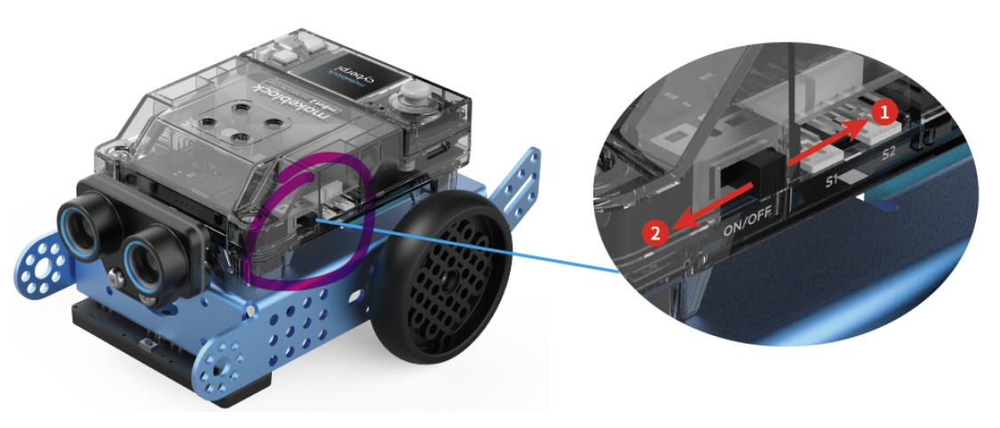
In the mBlock IDE, select CyberPi on the Devices tab in the lower left pane, and click Bluetooth.
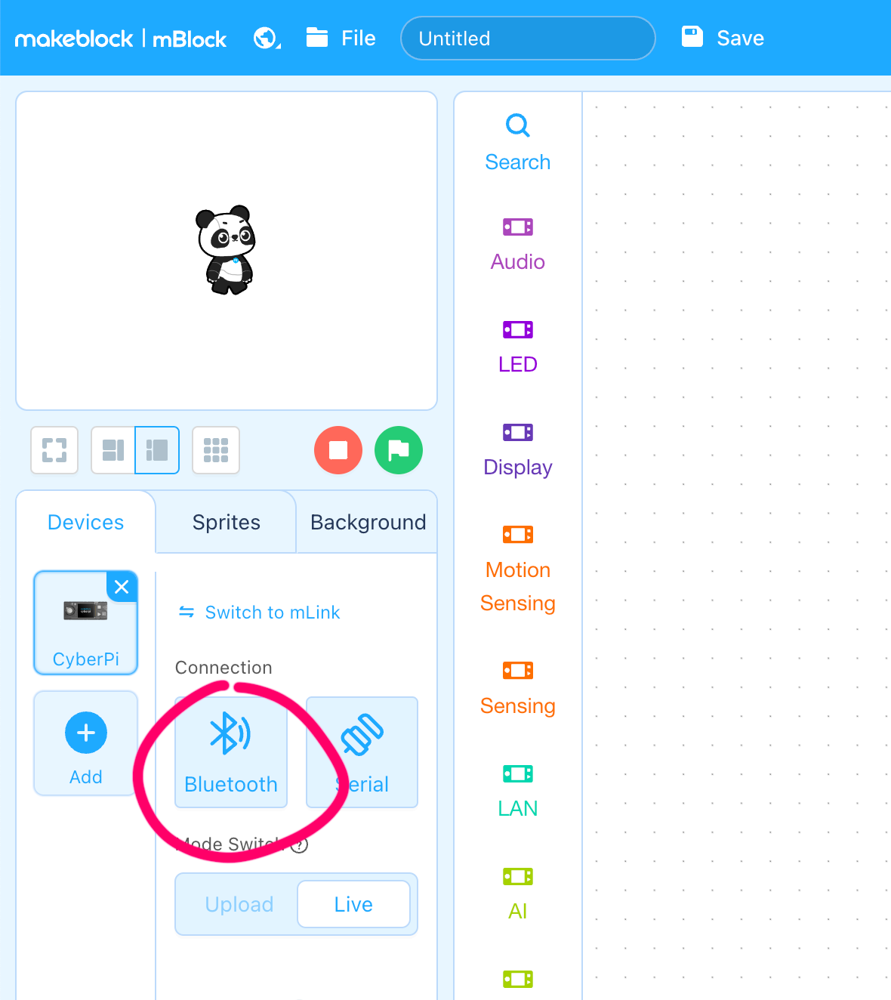
Then choose Makeblock_... in the pop-up window, and click Pair.
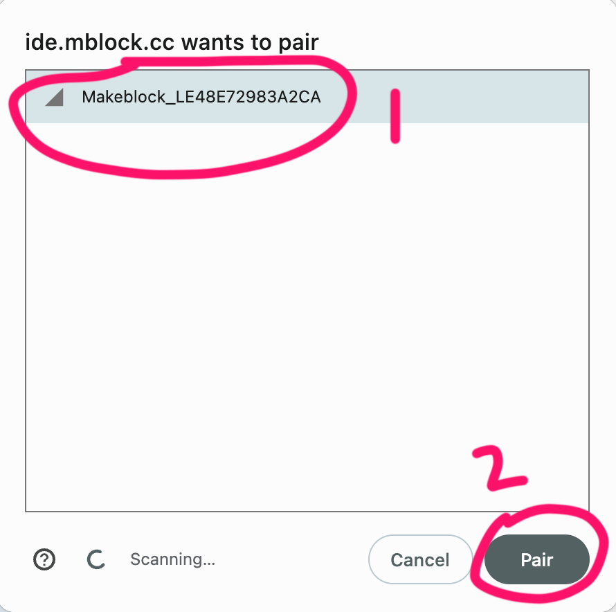
If other robots are nearby, be sure to choose the correct one. Look for one that matches the serial number for your robot, which is written on the side of the CyberPi unit. You also can get this information by clicking the HOME button on the CyberPi unit, then choosing Settings and About CyberPi.
Switch to Live mode by clicking the Live button.
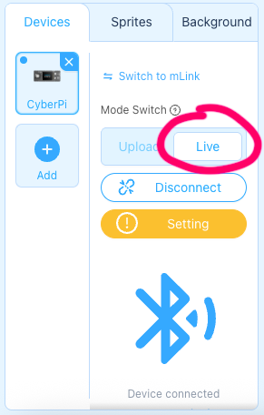
Drag the play hi until done block from the Audio category in the blocks palette into the coding workspace, and double click it. If Neo says "hi," you've successfully established a connection (the proverbial "Hello, World!").
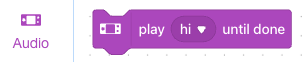
IMPORTANT: Please put Neo on the ground before making it move!
Verify CyberPi is selected on the Devices tab, and click + extension.
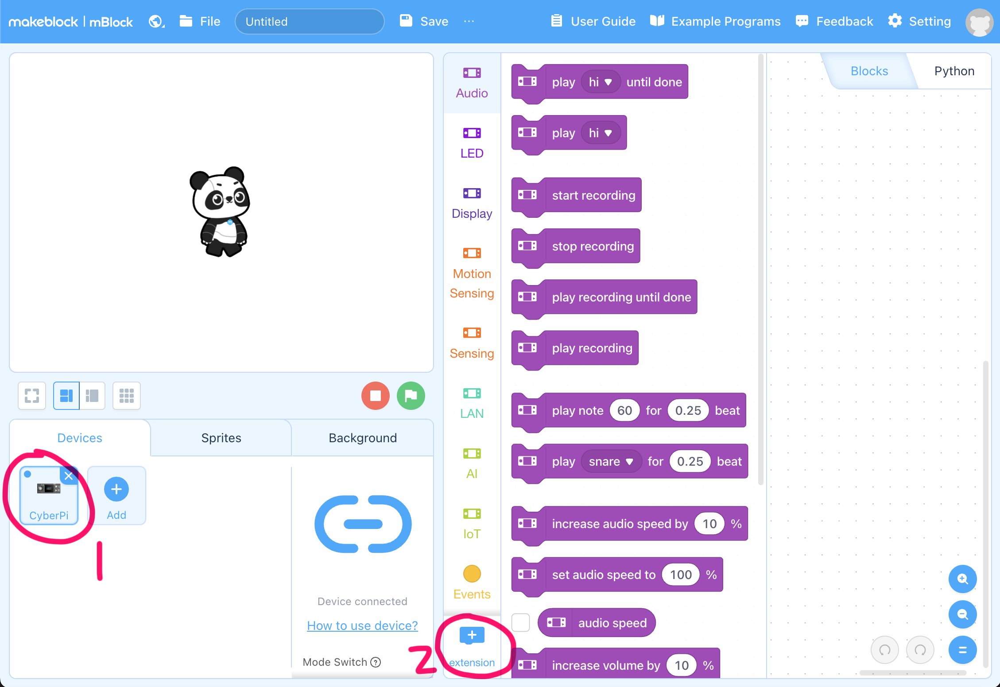
When the Extensions window opens, click + Add for mBot2 shield.
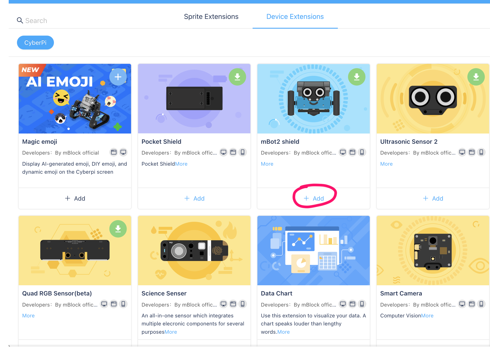
This gives you two new sets of blocks, including mBot2 Chassis. Use blocks in this category and the Events category to build the code below, which will make Neo move. To keep Neo safe, set the movement forward to 5 cm.
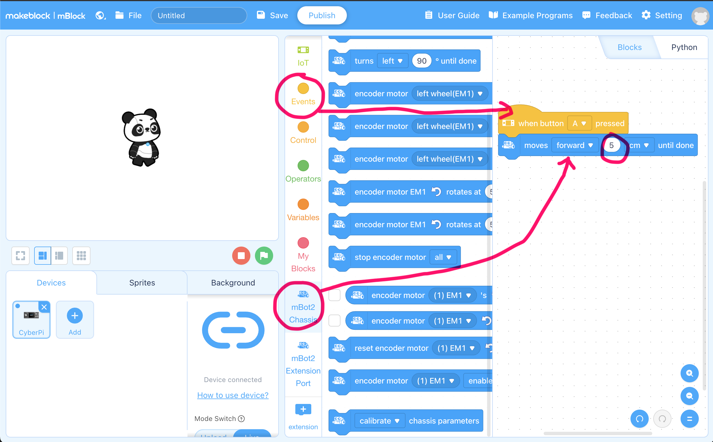
Press the A button on Neo to see it move!
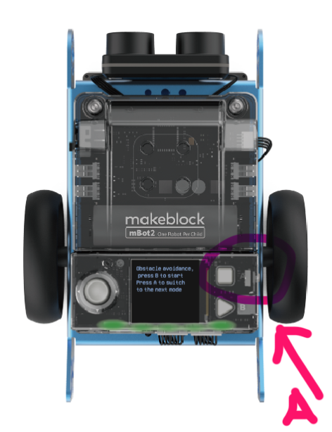
Try this code to make Neo move in a square.
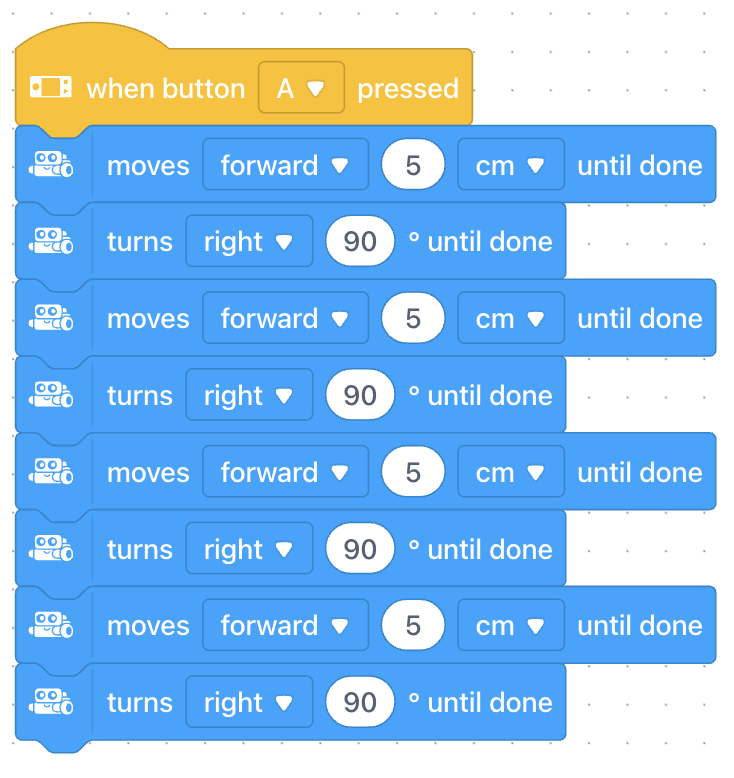
Update the blocks above to use a loop instead of repeating the same code four times.
Under what category did you find the loop block?
Under what category did you find blocks which let you show colors across the back of Neo?
Which block can you use to set and show all the colors to individual hues at once?
Neo can use a number of sensors, including the following built in ones.
Install and use the Ultrasonic Sensor 2 extension to detect when Neo is close to an obstacle. Build the program below to avoid obstacles.
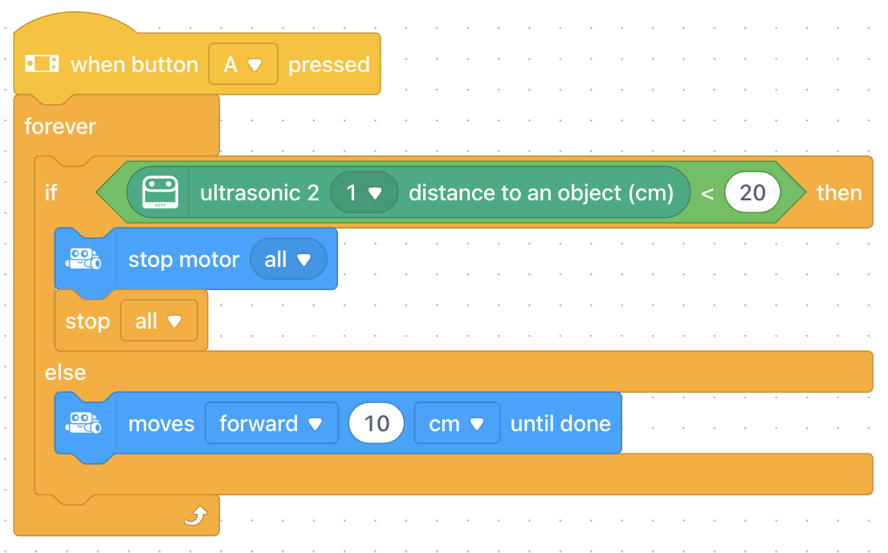
Can you adjust the code above, so when Neo stops, it also displays all red lights?
Can you update the Avoid Obstacles code, so Neo turns 90 degrees left or right rather than stopping?
To see the Python code which corresponds to the Avoid Obstacles blocks above, make sure you're in Upload mode, so the orange
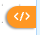
Code Viewer symbol appears to the right of the blocks. Click </> to reveal the Python code. You can click x to close the Code Viewer.Which keyword in the Python code specifies the beginning of the loop?
Which library imported into the code handles the is_press function call?
We can edit the actual Python code in the Python tab. First open the Code Viewer again. Highlight and copy (Ctrl-C) the code. Then click the Python tab.
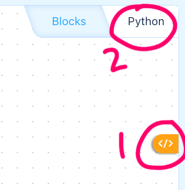
Paste (Ctrl-V) the code in the top pane.
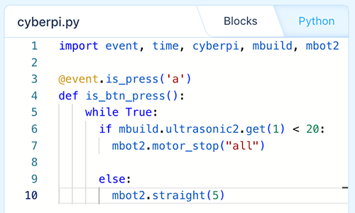
You can edit the code in the mBlock editor. To test code changes on Neo, click Upload.
Can you edit this Python code, so it runs when button B is pressed rather than button A?
Can you edit this code, so Neo only moves a maximum of two times? HINT: You could add a variable and change the while loop.
import event, time, cyberpi, mbuild, mbot2
@event.is_press('a')
def is_btn_press():
for i in range(2):
if mbuild.ultrasonic2.get(1) < 20:
mbot2.motor_stop("all")
else:
mbot2.straight(5)
Block coding is a good choice for new programmers, because you can't make a syntax error (i.e., type something wrong). You only have to deal with logical errors (e.g., accidentally setting Neo to turn left when it should turn right). If you have a syntax error in your Python code, Neo will display an error message on the CyberPi.
Alter line 7 of the Avoid Obstacles Python code above as follows.
@event.is_press('a')
def is_btn_press():
while True:
if mbuild.ultrasonic2.get(1) < 20:
mbot2.motor_stop("all"
else:
mbot2.straight(5)On Neo's CyberPi display, which line does it indicate has an error?
Can you guess why?
Image Credits: Some content adapted from images on support.makeblock.com.
You must enter your flags below and click submit to earn points for this activity. You do NOT have to enter all flags to earn credit, but you must click submit. You may update the flags and submit them an unlimited number of times until the due date. Your highest score will be entered in the gradebook.
If a flag has more than one box to the right of it, enter the same flag into each box. These flags are worth more points.